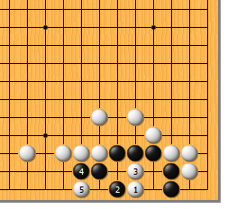
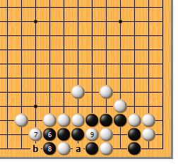
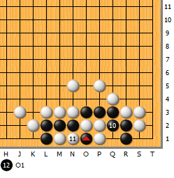
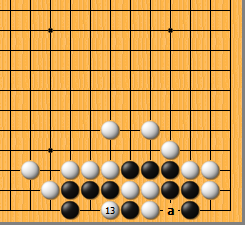
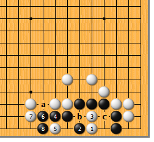
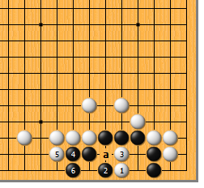
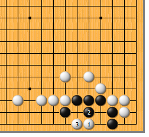

|  |  | |
| 图1 此型和第29型根本不一样！白1点，非必杀不可下于此。黑2尖顶，白3长，黑4冲，常套。白5托，手筋！且看下去…… | 图2 黑6冲，别无他法，白7、黑8，也是必然的交换。接下来，白9断，形势渐趋明朗。显然，黑若a位提，白可于b位闷吃。
| |
|  |  | |
| 图3 黑10只好打吃，白11提黑一子，同时打吃黑棋，黑12于白11右一路反提白二子，再次叫吃白棋……（头晕了吧？） | 图4 最后一招，白13再提。至此，真相大白，显然，a位打不打于事无补，黑是刀把五！
| |
|  |  | |
图5 现在知道第29型为什么不能采取本型的手段了吧？如图，变化至黑8，由于白准备不足，a位空了一气，白如于b位断，会被黑于c位吃胀牯牛，反而大损！
| 图6 来看看失败图。白1至黑4时，白5如挡，平庸。黑6立下做劫，自然乐不可支。白5如于a位断，黑仍可于6位做劫。“五十步笑百步”也，何足挂齿。
| |
|  | 您的高见 | |
图7 白1点时，黑2如顶，白3长，黑简单净死。黑的这种下法算不上抵抗，可以视为“自尽”。 |